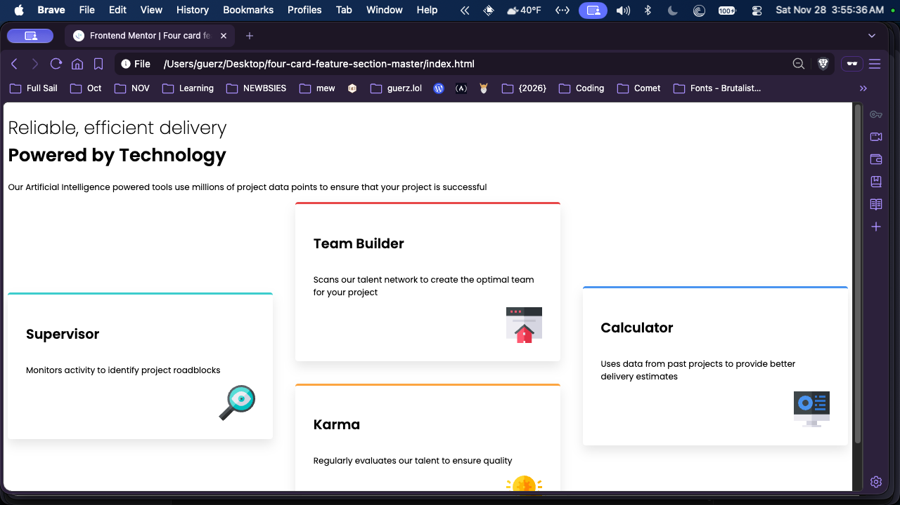

QR code component
Flexbox centering and a variable font loaded with @font-face.
View the QR code component live See the QR code component code
Frontend Mentor
Every challenge I finish gets a card here, with the live build and the code. HTML and CSS only for now.
Flexbox centering and a variable font loaded with @font-face.
View the QR code component live See the QR code component code

CSS Grid placement with a mobile-first media query.
View the four card feature section live See the four card feature section code